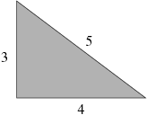
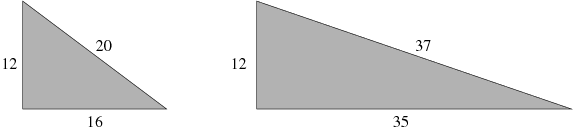

| Source file: | revenge.{c, cpp, java} |
| Input file: | revenge.in |
The famous Pythagorean theorem states that a right triangle, having side lengths A and B and hypotenuse length C, satisfies the formula
A2 + B2 = C2
It is also well known that there exist some right triangles in
which all three side lengths are integral, such as the classic:

Further examples, both having A=12, are the following:

The question of the day is, given a fixed integer value for A, how many distinct integers B > A exist such that the hypotenuse length C is integral?
Input: Each line contains a single integer
A, such that
Output: For each value of A, output the number of integers B > A such that a right triangle having side lengths A and B has a hypotenuse with integral length.
| Example input: | Example output: |
| 3 12 2 1048574 1048575 0 | 1 2 0 1 175 |
A Hint and a Warning:
Our hint is that you need not consider any value for B
that is greater than
Our warning is that for values of
You can guarantee yourself 64-bit integer calculations by using the type long long in C++ or long in Java. But neither of those types will allow you to accurately calculate the value of C2 for such an extreme case. (Which is, after all, what makes this Pythagoras's revenge!)